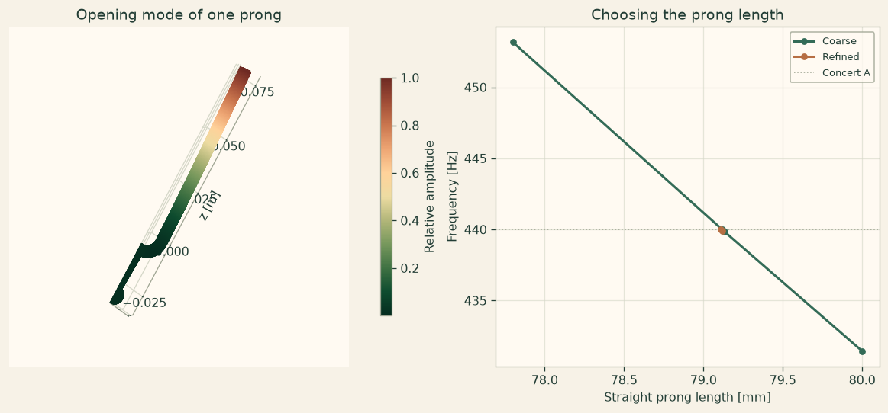
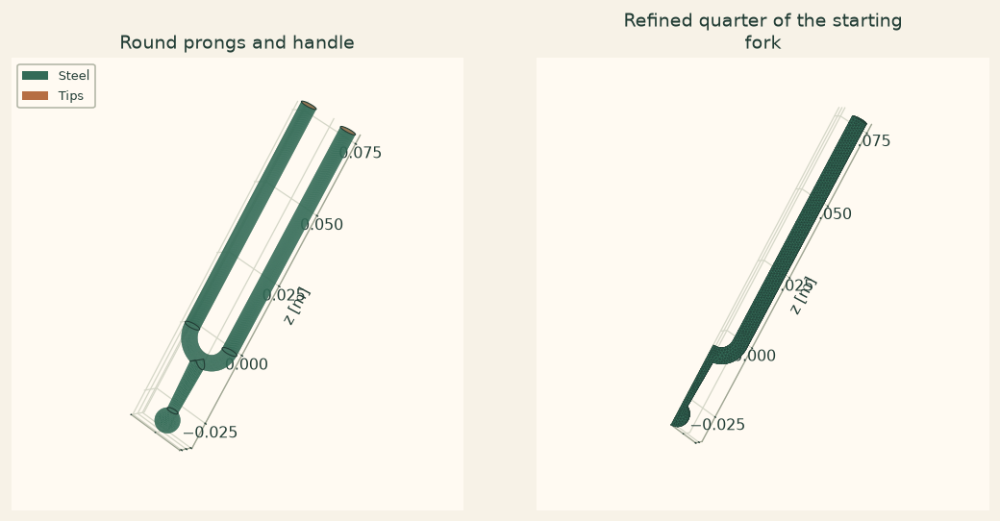

Docs › Examples › Tuning a fork to concert A
Structural mechanics · 3D
Tuning a fork to concert A
Change the length of two round steel prongs until their opening mode reaches concert pitch. Each trial updates the CAD model and solves the elastic eigenproblem.
Run locally with OneSimulation. The example downloads are free. Running them requires an activated runtime. OneSimulation 1.0 · CPython 3.13 on macOS (Apple Silicon), Ubuntu 22.04 (x86-64), and Windows x64. Installation and activation · View pilot plans. Scope of the reference checks.


What it computes
Two symmetry planes preserve the opening mode in a three-dimensional quarter model with a free handle. A secant search first tunes the prong length on the coarser mesh, then repeats the check and any necessary correction on a finer mesh.
What it checks
The refined design has 15,943 nodes and 8,247 quadratic tetrahedra. The prongs vibrate at 439.994 Hz at a straight length of 79.110 mm. The cantilever estimate is 78.35 mm.
Geometry
Save the STEP file tuning_fork_prong_length_optimization.step next to the notebook before running it.


The geometry script
The script tuning_fork_prong_length_optimization_geometry.py builds the geometry with the CAD objects of OneSimulation and writes the file. Change a dimension there, run it, and run the notebook again.
"""Build a 78 mm round-pronged steel tuning fork and label its two end faces."""
from math import radians, tan
from pathlib import Path
from tempfile import TemporaryDirectory
from onesim.cad import CadGeometryBuilder
from onesim.cad.d3 import Box, Cone, Cylinder, Sphere, Torus
from onesim.cad.exchange import load
mm = 1e-3
bend, radius, length = 7.5*mm, 2.5*mm, 78*mm
ring = Torus(major_radius=bend, minor_radius=radius, axis=(0, 1, 0))
lower_half = Box(length=0.04, width=0.04, height=0.03, origin=(-0.02, -0.02, -0.03))
stem = Cone(bottom_radius=radius, top_radius=radius-20*mm*tan(radians(2)),
height=20*mm, origin=(0, 0, -bend), axis=(0, 0, -1))
handle = Sphere(radius=4*mm, origin=(0, 0, -bend-22.5*mm))
prongs = [Cylinder(radius=radius, length=length, origin=(x, 0, 0)) for x in (-bend, bend)]
fork = (ring & lower_half) | stem | handle | prongs[0] | prongs[1]
with TemporaryDirectory() as directory:
neutral = Path(directory) / "fork.step"
shape = CadGeometryBuilder().build(fork)
shape.kernel.export_step(shape.reference, neutral)
part = load(neutral)
tips = part.select(faces=lambda face: abs(face.center[2]-length) < 1e-8)
part.grouped(tips=tips).save("tuning_fork_prong_length_optimization.step")The notebook
The complete notebook, cell by cell. Run it to produce the figures and the comparison printout.
The pitch of a free steel tuning fork depends on the length of its prongs. Starting from round 78 mm prongs joined by a semicircular bend, change their length until the opening mode reaches 440 Hz. Every pitch in the search comes from a three-dimensional elastic eigenmode calculation.
import numpy as np
from onesim.cad.d3 import Box
from onesim.cad.exchange import load
from onesim.materials import IsotropicSolid
from onesim.meshing import TetrahedralMesher, with_order
from onesim.numerics import Numerics
from onesim.numerics.fem import FiniteElement, Lagrange
from onesim.numerics.linear import SparseDirect, SparseSymmetricEigenSolver
from onesim.physics.solid_mechanics import (
FixedDisplacementComponents, LinearElasticity, TractionFree, structural_modes,
)
from onesim.simulation import Problem, Simulation
from onesim.visualization import plots, theme
theme.set()Round prongs and an unrestrained handle
The STEP file contains a fork with 2.5 mm prong radius and 7.5 mm bend radius. In the opening mode both arms bend equally in opposite directions. Two mirror planes let a quarter of the solid represent the full fork. On each cut face only the displacement normal to that plane is zero. The handle is free to vibrate.
mm, target = 1e-3, 440.0
fork = load("tuning_fork_prong_length_optimization.step")
window = Box(length=0.02, width=0.02, height=0.15, origin=(0, 0, -0.05))
steel = IsotropicSolid(density=7850, specific_heat_capacity=460, thermal_conductivity=44,
youngs_modulus=205e9, poisson_ratio=0.285, thermal_expansion_coefficient=12e-6)
fine_size = 0.85*mm
method = Numerics(spatial=FiniteElement(element=Lagrange(order=2)), linear_solver=SparseDirect())
view = plots.Camera(elevation=16, azimuth=-67, roll=-28, distance=1.24)
fig = plots.figure(1, 2, size=(9.5, 4.6))
plots.geometry(fork, selection={"Steel": fork.boundaries.all-fork.boundaries.tips, "Tips": fork.boundaries.tips}, labels=False, camera=view,
title="Round prongs and handle", ax=fig[0])
plots.mesh(with_order(TetrahedralMesher(target_size=fine_size).generate(fork & window), 2), groups=("all",), legend=False, camera=view,
title="Refined quarter of the starting fork", ax=fig[1])
plots.show()Find the prong length
The target is the concert A of ISO 16. Start at two lengths on opposite sides of the target. Each secant update interpolates the latest two pitch errors and then remeshes the proposed geometry. The proposed lengths are rounded to the nearest micrometre. A second search on a denser mesh starts at the first optimum. Its first correction uses the pitch slope from the coarser solve. For an independent starting estimate, Euler–Bernoulli theory treats each arm as a circular cantilever with effective length equal to the straight prong plus one quarter of the bend circumference.
effective = np.sqrt(1.875104**2 * 2.5*mm/2 * np.sqrt(205e9/7850) / (2*np.pi*target))
beam_length = effective/mm - np.pi*7.5/2
print(f"Isolated-cantilever estimate: {beam_length:.2f} mm")
search = {}
slope = None
for size, label in ((3*mm, "Coarse"), (fine_size, "Refined")):
lengths, pitches = ([77.8, 80.0] if slope is None else [length]), []
for trial in range(5):
length = lengths[trial]
quarter = fork.move_faces(fork.boundaries.tips, (0, 0, (length-78)*mm)) & window
faces = [quarter.select(faces=lambda face, k=k: face.kind == "plane" and abs(face.center[k]) < 1e-8)
for k in (0, 1)]
model = LinearElasticity(domain=quarter.volume, material=steel)
symmetry = tuple(FixedDisplacementComponents(physics=model, boundary=face, components=(axis,), value=0)
for face, axis in zip(faces, ("x", "y")))
free = TractionFree(physics=model, boundary=quarter.boundaries.all-(faces[0] | faces[1]))
problem = Problem(name="Free tuning fork", geometry=quarter, physics=(model,), boundary_conditions=(*symmetry, free))
mesh = with_order(TetrahedralMesher(target_size=size).generate(quarter), 2)
result = Simulation(problem=problem, mesh=mesh, numerics=method).solve_stationary()
modes = structural_modes(result, model, mode_count=2, target_frequency=target, zero_eigenvalue_tolerance=1.0,
eigensolver=SparseSymmetricEigenSolver(tolerance=1e-8))
index = int(np.argmin(abs(np.asarray(modes.frequencies)-target)))
pitch = modes.frequencies[index]
pitches.append(pitch)
print(f"{label}: {length:.3f} mm, {pitch:.3f} Hz ({len(mesh.coordinates)} nodes, {mesh.cell_count} tetrahedra)")
if len(pitches) >= 2:
slope = (pitches[-1]-pitches[-2]) / (lengths[-1]-lengths[-2])
if abs(pitch-target) < 0.05:
break
if len(pitches) == len(lengths) and trial < 4:
lengths.append(round(length-(pitch-target)/slope, 3))
order = np.argsort(lengths)
search[label] = (np.asarray(lengths)[order], np.asarray(pitches)[order])
print(f"Final length {length:.3f} mm, {length-beam_length:+.2f} mm from the cantilever estimate.")
print(f"Pitch error {pitch-target:+.3f} Hz")The tuned mode
The mode is displayed at arbitrary amplitude. The second panel shows the solved designs and their target pitch.
displacement = result.field(model.displacement)
motion = modes.mode_displacements(index)
amplitude = np.linalg.norm(motion, axis=1).max()
shape = displacement.with_states((0.0,), (motion.reshape(displacement.values.shape),))
fig = plots.figure(1, 2, size=(10.5, 4.6))
plots.surface(shape, component=lambda u, position: np.linalg.norm(u, axis=1)/amplitude,
deformation=shape, deformation_scale=0.003/abs(motion).max(), camera=view,
title="Opening mode of one prong", label="Relative amplitude", ax=fig[0])
plots.line(y=search, markers=True,
hlines={"Concert A": target}, xlabel="Straight prong length [mm]", ylabel="Frequency [Hz]",
title="Choosing the prong length", ax=fig[1])
plots.show()